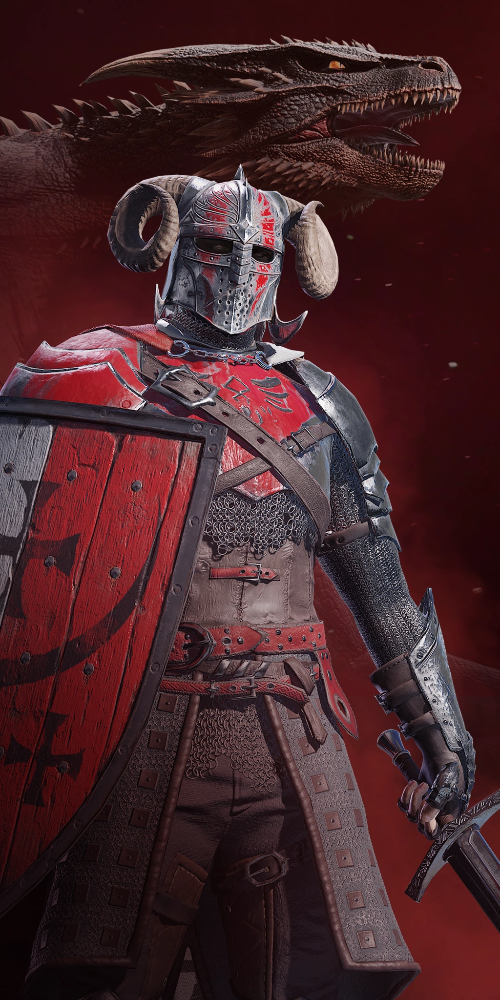

VÁLASZD KI A JÁTÉKSTÍLUSOD
Maraduer |
Windguard |
Phantom |
|  |

|

|
Versenyezz egy intenzív online játékban és fedezd fel a gyors tempójú Century: age of Ashes-t! Merülj bele az arénába egyedül, vagy barátokkal és harcolj a túlélésért! Játsz három változatos játék móddal amik 3v3-tól 6v6-os harcig terjednek.
Spoils of War: Lopj aranyat hatalmas lényektől és az ellenséges csapattól, miközben a saját aranyfészkedet véded, és alkalmazkodj különféle kiszámíthatatlan helyzetekhez!
Carnage: Egy 6v6 vérengzés különleges erőkkel amik felbukkannak az arénában, hogy elszabadísd a poklot az ellenfeleiden. Team Deathmatch, Sárkány lovagló stílusban!
Gates of Fire: Egy egyedi mód amiben kettó csapat csap össze a zászló birtoklásáért. Szerezz pontokat különleges kapuk átrepülése által az aréná körül, miközben birtoklod a zászlót!
Tűnj ki a csatatéren tekintélyes felszereléssel és legendás sárkányokkal, amelyeket csak az igazi sárkánylovasok bírtokolhatnak! Ahogy haladsz előre, minden szintlépéssel új lehetőségek tárulnak fel ahhoz, hogy testre szabd a karaktereidet és sárkányaidat.
Sárkányok és lovasok: A Century: Age of Ashes-ben kinézeti tárgyakat szerezhetsz azzal, hogy játszasz, vagy vásárolsz. Szabd testre a sárkányodat legendás kinézetekkel, csillogó páncélokkal, káprázatos nyergekkel és még sok mással. Fokozhatod a lovasod stílusát is gondosan kialakított páncélokkal, fegyverekkel, köpenyekkel... Minden ami ahhoz kell, hogy ragyogj az arénában!
Csak kinézeti tárgyak: Minden játékbeli fizetéssel csak is kinézeti tárgyakat lehet szerezni. Így aki szeretne az vehet magának menő kinézeteket, de aki ingyen szertne játszani, annak nem kell aggódnia attól, hogy akik fizetnek több előnyhöz jutnak.